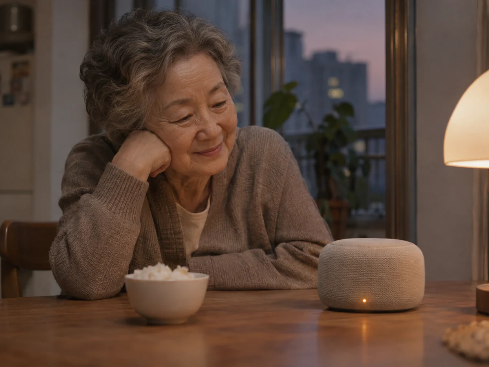

“마실아, 쌀이 다
떨어져 간다.”
평소처럼 말을 걸면 마실이 지난 주문 기록을 찾습니다. 어떤 물건을 몇 개 주문할지, 배송비까지 총 얼마인지 차분히 다시 확인합니다.
2026 엘리스 AI 챌린지 · 청소년 부문
이웃집에 마실 나가듯 편하게 말을 걸면, 필요한 부탁과 나누고 싶은 소식을 가족에게 이어줍니다.
시연 시작
평소처럼 말을 걸면 마실이 지난 주문 기록을 찾습니다. 어떤 물건을 몇 개 주문할지, 배송비까지 총 얼마인지 차분히 다시 확인합니다.
가족은 필요한 주문과 일정을 앱에서 바로 확인할 수 있습니다. 어르신이 공유를 허락하신 관심사는 다음 통화의 따뜻한 대화 주제가 됩니다.
어르신의 대화와 가족에게 전해지는 소식을 두 화면에서 함께 확인해 보세요.
가상 대사와 상품으로 구성된 시연입니다. 실제 주문과 결제는 진행되지 않습니다.
앞으로의 개발 계획
할머니 댁 식탁에 태블릿 한 대를 놓는 것에서 시작합니다. 말 한마디로 가족과 소식을 잇고, 나아가 집 안의 안전과 생활 도움까지 넓혀가고자 합니다.
태블릿에 마실 웹앱(PWA)을 설치해 식탁에 두는 것만으로 시작할 수 있습니다. 일반 스피커를 활용하려면 라즈베리파이에 USB 마이크와 스피커를 연결해 구성합니다.
태블릿용 웹앱과 라즈베리파이 연동 코드는 오픈소스로 공개하는 방향을 검토하고 있습니다.
어르신 댁 기기가 마실 운영 서버에 먼저 접속하는 구조로, 집 공유기 포트포워딩 같은 복잡한 설정 없이도 어르신이 전한 소식과 주문 상태를 가족 앱으로 바로 보냅니다.
어르신 댁 기기는 마실 운영 서버에 HTTPS·WebSocket으로 연결됩니다. 가족이 집에서 서버를 직접 운영(자가 호스팅)할 경우에는 인증된 리버스 터널을 통해 안전하게 연결하는 방식을 지원할 계획입니다.
리버스 터널 연결 방식 (Cloudflare Tunnel)“그거 하나 시키도” 같은 지역 사투리나 일상 표현도 알아듣고, 어떤 물건을 몇 개 원하시는지 다시 확인합니다. 중간에 수량을 바꾸거나 취소하셔도 자연스럽게 이어받도록 구현합니다.
이전 대화와 취향을 기억해 대화를 이어가며, 원하지 않는 기억은 언제든 수정하거나 지울 수 있습니다. 동의받은 가족 목소리로 응답하는 기능도 함께 준비합니다.
가족 목소리는 어르신과 녹음에 참여한 가족이 모두 동의한 경우에만 사용하며, 동의를 취소하면 즉시 기본 목소리로 돌아갑니다.
판매처에서 받아온 상품 정보와 배송비를 먼저 읽어드립니다. 어르신이 확인하시면 사전 허용 품목과 한도 안에서는 자동으로 주문하고, 새 물건이거나 한도를 넘으면 가족이 앱에서 직접 확인한 뒤 승인합니다.
실제 주문을 넣기 전 서버가 배송지와 직전 주문 내역을 대조해, 같은 물건이 중복 주문되거나 잘못 결제되는 일을 막습니다.
넘어지는 충격음이나 물이 끓어 넘치는 소리, 싱크대 누수 같은 이상 징후가 감지되면 마실이 먼저 어르신께 괜찮으신지 여쭙습니다. 도움을 요청하시거나 응답이 없으면 가족에게 바로 확인 알림을 보냅니다.
장기적으로는 스마트홈 기기와 피지컬 AI까지 연동해, 말로 안부를 살피는 데서 나아가 집 안의 실제 도움으로 이어지는 돌봄 환경으로 발전시킬 계획입니다.